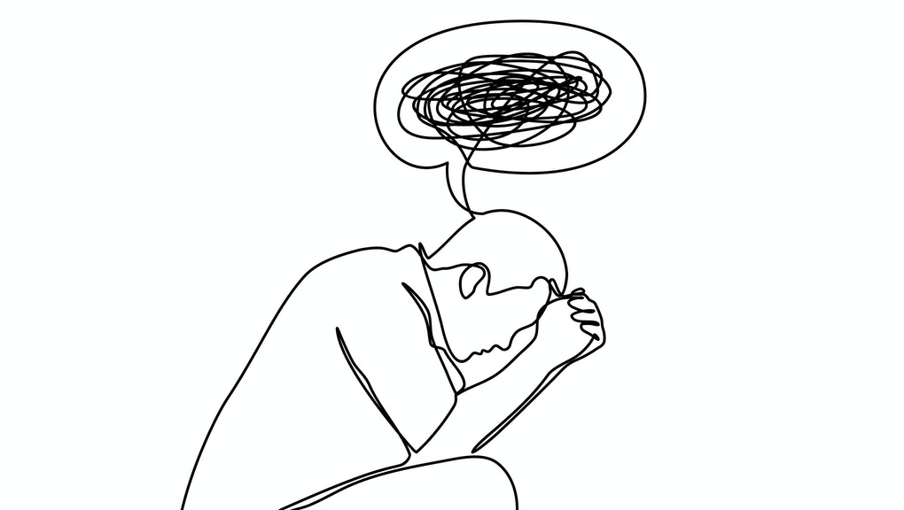

(Updated 20/08/2021: This post was originally shared on Medium, Helping Someone Experiencing a Panic Attack). I've also added it to my blog.
As a long term sufferer of Generalised Anxiety Disorder, I’ve been extremely lucky to have extremely supportive family and friends around me. The manner in which your nearest and dearest relate to your condition really makes a massive difference, and I can’t imagine having to battle an anxiety disorder without the support of others.
One of the most common symptoms of anxiety disorders is panic attacks. I have experienced many panic attacks over the years and they really aren’t pleasant in the slightest. Panic attacks occur when a person suffers from an acute burst of anxiety which then causes extremely intense mental and physical symptoms. Whilst panic attacks can be of different severities, the most common symptoms include:
From personal experience, given the intense nature of these symptoms, I’ve always been really concerned about experiencing a panic attack in public and with other people. I strongly believe that this is the case with many other fellow panic attack sufferers. It’s therefore really reassuring and comforting to know, that the people you spend most time with are going to be understanding, empathetic and show no judgement if and when you experience a panic attack.
The list before is a non-exhaustive list of things to do and not do when someone suffers from a panic attack.
✅ Do remind the person that their symptoms are only temporary. Panic attacks are short bursts of intense physical symptoms but will never last forever. In fact, from personal experience, I’ve never had a panic attack last longer than 45 minutes. For someone in the middle of a panic attack, it’s extremely comforting to know that their symptoms will soon subside to a more manageable level.
✅ Do offer to stay with the person or let them be on their own if they wish. All panic attack sufferers are different; some prefer to be in the company of others to help comfort them, whilst others prefer just to be on their own to calm down. Gently suggest both options and tell the person you are perfectly happy to accommodate either.
✅ Do encourage the person to focus on their breathing. When someone is experiencing a panic attack, it is likely their breathing is fast and short. This unintentionally results in an increased heart rate and in turn activates the person’s “fight or flight” mode. This heightened sense of awareness results in even worse physical symptoms. The key to counteract this is to intentionally make slow, deep breaths through the diaphragm and really focus on the physical sensations of the stomach expanding and contracting. Encourage the person to breathe in for 6 seconds, hold for 4, and then breathe out for 6.
✅ Do offer to get the person a glass of water. Similar to slow, deep breathing, drinking a glass of water gives the person an opportunity to really focus on the sensations of taste and drinking rather than their physical symptoms.
✅ Do remind the person that they can do whatever they feel they need do. The last thing the person wants is to feel obliged to stay in the situation they are currently in. Offer them an “escape route” to remove themselves from the current situation. For example, if you’re in a crowded restaurant, offer to get some fresh air outside or even accompany them home. But most important of all, don’t pressure them into doing something they don’t want to do.
✅ Do message or call the person to check if they’re okay. Later the same day or perhaps the next, get in touch with the person to see how they’re doing. From personal experience, it could be that the person is feeling embarrassed and ashamed of what happened. They may therefore be hesitant of getting in touch so messaging them first and sending them good wishes is a big thing to alleviate their worries. Suggest hanging out with them too as soon as they’re feeling up to it.
✅ Do remind the person how much you enjoy hanging out with them. Many anxiety sufferers are worried about having panic attacks in public as they’re not sure how people will react. Gently remind them that having an anxiety disorder doesn’t define who they are, and that you love hanging out with them no matter if their anxiety is visible or not.
✅ Do show empathy and understanding. Showing empathy and understanding is crucial in letting the person know that you’re there to support them and help them through their anxiety battles.
❌ Don’t tell the person that they’ve got nothing to be anxious about. Whilst it may seem reassuring, telling the person they have nothing to worry about is not helpful. The rational part of the person’s brain is likely well aware that they have nothing to be anxious about. The person is likely very frustrated that they’re feeling anxious when deep down they know that they have no reason to be. You confirming this is only likely to add to the frustration.
❌ Don’t be frustrated or irritated with the person. Whilst this my seem extremely obvious, the last thing the person needs is to see you being frustrated and not understanding. They didn’t wake up in the morning and decide to have a panic attack for a laugh; and they’re certainly not in control of it happening. Personally, my biggest concern about having a panic attack in public was being an inconvenience to others. Showing frustration just confirms to the person that you think they’re an inconvenience. Furthermore to be quite frank, someone showing frustration to someone having a panic attack is not someone I’d like to spend time with.
❌ Don’t ask the person why they are anxious. The chances are that the person themselves doesn’t know. Asking the question during the panic attack could lead to the person becoming more anxious as they can’t work out why.
❌ Don’t remain silent pretending everything is okay. This is only going to make the person feel like you don’t understand how they’re feeling and you’re not accepting how they feel.
So there it is; a simple list of dos and don’ts for those in the company of someone experiencing a panic attack. Whilst this list is by no means exhaustive, the things listed really help me when I’m experiencing a panic attack.
Lastly, it is hugely important that the person suffering from a panic attack is within the company of people that they truly feel comfortable with. Whilst it may not seem like much, the simple act of gently saying that the symptoms won’t last forever can be really comforting.